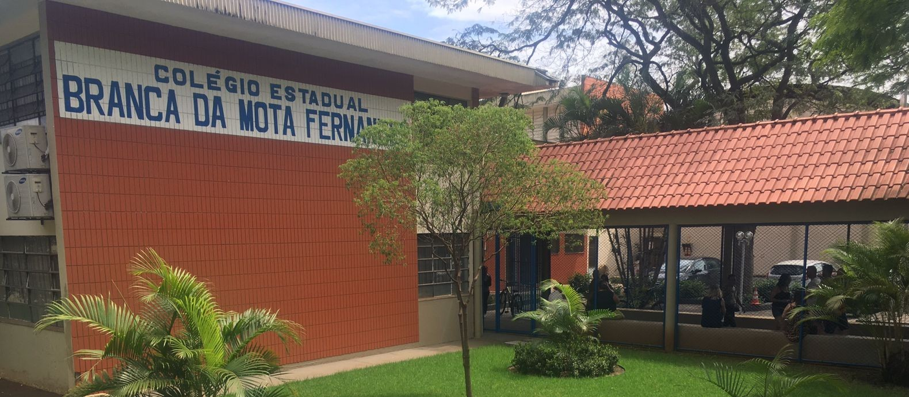

1970

Como começou a instituição?
✍️ Organização: João
A instituição de ensino foi criada pela Lei Municipal nº 777/1970, da Câmara Municipal de Maringá, inicialmente denominada Grupo Escolar Branca da Mota Fernandes.
Funcionava onde hoje está o Posto de Saúde Tuiuti, na esquina da Rua Caracas com a Avenida Tuiuti, atendendo alunos da 1ª à 4ª série.
Fonte: pesquisa histórica do colégio.